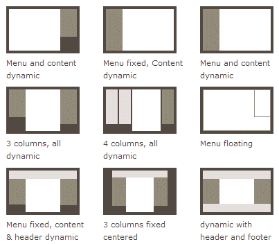
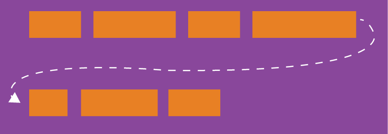
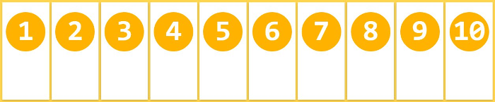
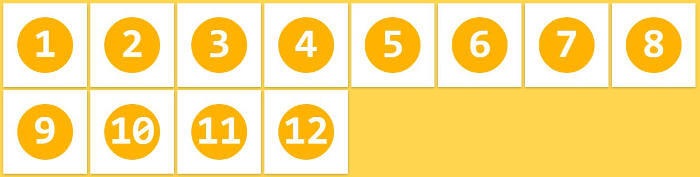
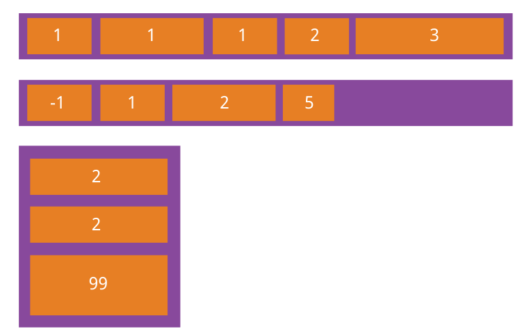
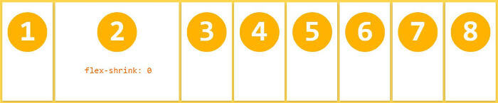

El diseño de páginas web (layout) es una aplicación clave de CSS.

La solución tradicional para el diseño se basa enel modelo de cajay depende dedisplayla propiedad +positionla propiedad +floatla propiedad. Es muy inconveniente para diseños especiales, comoel centrado verticalque no es fácil de lograr.

En 2009, el W3C propuso una nueva solución: Flex Layout, que puede implementar varios diseños de página de manera simple, completa y receptiva. Actualmente, ya cuenta con el soporte de todos los navegadores, lo que significa que ahora se puede usar esta función de manera segura.

Flex Layout se convertirá en la solución preferida para el diseño en el futuro. Este artículo presenta la sintaxis de Flex Layout.
El siguiente contenido se refiere principalmente a los siguientes dos artículos:A Complete Guide to Flexbox 和 A Visual Guide to CSS3 Flexbox Properties。
1. ¿Qué es Flex Layout?
Flex es la abreviatura de Flexible Box, que significa "diseño flexible", y se usa para proporcionar la máxima flexibilidad al modelo de caja.
Cualquier contenedor puede designarse como diseño Flex.
.box{
display: flex;
}
Los elementos en línea también pueden usar el diseño Flex.
.box{
display: inline-flex;
}
Los navegadores con kernel Webkit deben agregar el prefijo -webkit.
.box{
display: -webkit-flex; /* Safari */
display: flex;
}
Nota: después de configurar el diseño Flex, las propiedades float, clear y vertical-align de los elementos secundarios dejarán de funcionar.
2. Conceptos básicos
Un elemento que usa el diseño Flex se llama contenedor Flex (flex container), abreviado "contenedor". Todos sus elementos secundarios se convierten automáticamente en miembros del contenedor, llamados elementos Flex (flex item), abreviados "elementos".

El contenedor tiene dos ejes por defecto: el eje principal horizontal (main axis) y el eje transversal vertical (cross axis). La posición de inicio del eje principal (el punto de intersección con el borde) se llama main start, la posición final se llama main end; la posición de inicio del eje transversal se llama cross start, y la posición final se llama cross end.
Los elementos se organizan a lo largo del eje principal por defecto. El espacio del eje principal que ocupa un solo elemento se llama main size, y el espacio del eje transversal que ocupa se llama cross size.
3. Propiedades del contenedor
Las siguientes 6 propiedades se establecen en el contenedor.
- flex-direction
- flex-wrap
- flex-flow
- justify-content
- align-items
- align-content
3.1 Propiedad flex-direction
La propiedad flex-direction determina la dirección del eje principal (es decir, la dirección de disposición de los elementos).
.box {
flex-direction: row | row-reverse | column | column-reverse;
}

Puede tener 4 valores.
- row (valor por defecto): el eje principal es horizontal, con el punto de inicio a la izquierda.
- row-reverse: el eje principal es horizontal, con el punto de inicio a la derecha.
- column: el eje principal es vertical, con el punto de inicio en el borde superior.
- column-reverse: el eje principal es vertical, con el punto de inicio en el borde inferior.
3.2 Propiedad flex-wrap
Por defecto, todos los elementos se colocan en una sola línea (también llamada "eje"). La propiedad flex-wrap define cómo envolver (hacer salto de línea) si una línea no cabe.

.box{
flex-wrap: nowrap | wrap | wrap-reverse;
}
Puede tomar tres valores.
(1) nowrap (por defecto): sin salto de línea.

(2) wrap: con salto de línea, la primera línea arriba.

(3) wrap-reverse: con salto de línea, la primera línea abajo.

3.3 flex-flow
La propiedad flex-flow es una forma abreviada de las propiedades flex-direction y flex-wrap, con un valor por defecto de row nowrap.
.box {
flex-flow: <flex-direction> <flex-wrap>;
}
3.4 Propiedad justify-content
La propiedad justify-content define la alineación de los elementos en el eje principal.
.box {
justify-content: flex-start | flex-end | center | space-between | space-around;
}

Puede tomar 5 valores; la alineación específica está relacionada con la dirección del eje. A continuación se asume que el eje principal va de izquierda a derecha.
- flex-start (valor por defecto): alineado a la izquierda
- flex-end: alineado a la derecha
- center: centrado
- space-between: alineado en ambos extremos, con intervalos iguales entre elementos.
- space-around: los intervalos a cada lado de cada elemento son iguales. Por lo tanto, el intervalo entre elementos es el doble del intervalo entre elementos y el borde.
3.5 Propiedad align-items
La propiedad align-items define cómo se alinean los elementos en el eje transversal.
.box {
align-items: flex-start | flex-end | center | baseline | stretch;
}

Puede tomar 5 valores. La alineación específica está relacionada con la dirección del eje transversal. A continuación se asume que el eje transversal va de arriba hacia abajo.
- flex-start: alineado con el inicio del eje transversal.
- flex-end: alineado con el final del eje transversal.
- center: alineado con el punto medio del eje transversal.
- baseline: alineado con la línea base de la primera línea de texto del elemento.
- stretch (valor por defecto): si el elemento no tiene altura establecida o está configurado como auto, ocupará toda la altura del contenedor.
3.6 Propiedad align-content
La propiedad align-content define la alineación de múltiples ejes (líneas). Si el contenedor solo tiene un eje, esta propiedad no tiene efecto.
.box {
align-content: flex-start | flex-end | center | space-between | space-around | stretch;
}

Esta propiedad puede tomar 6 valores.
- flex-start: alineado con el inicio del eje transversal.
- flex-end: alineado con el final del eje transversal.
- center: alineado con el punto medio del eje transversal.
- space-between: alineado con ambos extremos del eje transversal, con los intervalos entre ejes distribuidos uniformemente.
- space-around: los intervalos a cada lado de cada eje son iguales. Por lo tanto, los intervalos entre ejes son el doble de los intervalos entre ejes y el borde.
- stretch (valor por defecto): el eje ocupa todo el eje transversal.
4. Propiedades de los elementos (items)
Las siguientes 6 propiedades se establecen en los elementos (items).
- order
- flex-grow
- flex-shrink
- flex-basis
- flex
- align-self
4.1 Propiedad order
La propiedad order define el orden de disposición de los elementos. Cuanto menor sea el valor, más adelante estará la posición; el valor por defecto es 0.
.item {
order: <integer>;
}

4.2 Propiedad flex-grow
La propiedad flex-grow define la proporción de crecimiento de un elemento; su valor por defecto es 0, es decir, si hay espacio restante, no crece.
.item {
flex-grow: <number>; /* default 0 */
}

Si la propiedad flex-grow de todos los elementos es 1, entonces se repartirán el espacio restante en partes iguales (si lo hay). Si un elemento tiene flex-grow de 2 y los demás de 1, el primero ocupará el doble de espacio restante que los demás.
4.3 Propiedad flex-shrink
La propiedad flex-shrink define la proporción de reducción de un elemento; su valor por defecto es 1, es decir, si el espacio es insuficiente, el elemento se reducirá.
.item {
flex-shrink: <number>; /* default 1 */
}

Si la propiedad flex-shrink de todos los elementos es 1, cuando el espacio sea insuficiente, se reducirán proporcionalmente. Si un elemento tiene flex-shrink de 0 y los demás de 1, cuando el espacio sea insuficiente, el primero no se reducirá.
Los valores negativos no son válidos para esta propiedad.
4.4 Propiedad flex-basis
La propiedad flex-basis define el espacio del eje principal (main size) que ocupa un elemento antes de distribuir el espacio sobrante. El navegador usa esta propiedad para calcular si hay espacio sobrante en el eje principal. Su valor por defecto es auto, es decir, el tamaño original del elemento.
.item {
flex-basis: <length> | auto; /* default auto */
}
Puede establecerse con el mismo valor que las propiedades width o height (por ejemplo, 350px), y el elemento ocupará un espacio fijo.
4.5 Propiedad flex
La propiedad flex es una abreviatura de flex-grow, flex-shrink y flex-basis, con un valor por defecto de 0 1 auto. Las dos últimas propiedades son opcionales.
.item {
flex: none | [ <'flex-grow'> <'flex-shrink'>? || <'flex-basis'> ]
}
Esta propiedad tiene dos valores rápidos: auto (1 1 auto) y none (0 0 auto).
Se recomienda usar esta propiedad en lugar de escribir las tres propiedades por separado, porque el navegador calculará los valores relacionados.
4.6 Propiedad align-self
La propiedad align-self permite que un solo elemento tenga una alineación diferente a la de los demás, y puede sobrescribir la propiedad align-items. Su valor por defecto es auto, lo que significa que hereda la propiedad align-items del elemento padre; si no hay elemento padre, equivale a stretch.
.item {
align-self: auto | flex-start | flex-end | center | baseline | stretch;
}

Esta propiedad puede tomar 6 valores; excepto auto, todos son exactamente iguales a los de la propiedad align-items.
Fuente: http://www.ruanyifeng.com/blog/2015/07/flex-grammar.html
Haz clic para compartir notas
<p style="font-size:14px;">¡Las notas deben ser una extensión del contenido de este artículo!</p><br> <p style="font-size:12px;"><a href="../tougao.html" target="_blank">Envío de artículos, haga clic aquí</a></p> <p style="font-size:14px;"><a href="./runoob-user-test-intro.html" target="_blank">Cómo obtener el código de invitación de registro</a></p> <h3 class="text-muted"><i class="fa fa-info-circle" aria-hidden="true"></i> ¡Antes de compartir notas debe <a href=".." class="runoob-pop">iniciar sesión</a>!</h3> <p><a href="./runoob-user-test-intro.html" target="_blank">Cómo obtener el código de invitación de registro</a></p>